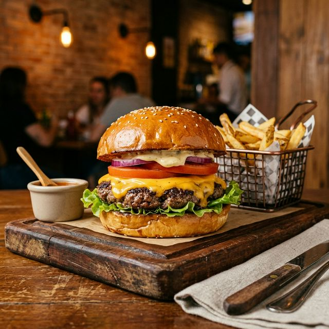

🍴
Sabores do Brasil
Portal de Receitas
Do fogão para a sua mesa
← Voltar às receitas

Lanches
★★★★★
X-Burguer Caseiro
Hamburguer artesanal suculento com queijo cheddar e molho especial.
⏱
25 min
Tempo
👤
2 porções
Porções
📊
Médio
Dificuldade
🔥
680
kcal
🥘 Ingredientes
400g de carne moída (patinho ou fraldinha)
2 pães de hamburguer brioche
2 fatias de queijo cheddar
Folhas de alface americana
2 fatias de tomate
Cebola roxa em rodelas
Maionese, mostarda e ketchup a gosto
Sal, pimenta-do-reino e alho em pó
📝 Modo de Preparo
1
Tempere a carne com sal, pimenta e alho em pó. Forme dois discos de 200g.
2
Aqueça uma frigideira ou chapa em fogo alto com um fio de azeite.
3
Grelhe os burgers por 3–4 minutos de cada lado para o ponto.
4
Coloque o queijo sobre a carne no último minuto e tampe.
5
Toste o pão na chapa por 1 minuto.
6
Monte com maionese, alface, tomate, a carne com queijo, cebola e molhos.
🔥 Informação Nutricional
680
kcal / porção
Referência diária: 2.000 kcal
85% da referência diária por porção
⚠️ Alergênicos
glúten
leite
ovos
▶ Vídeo Tutorial